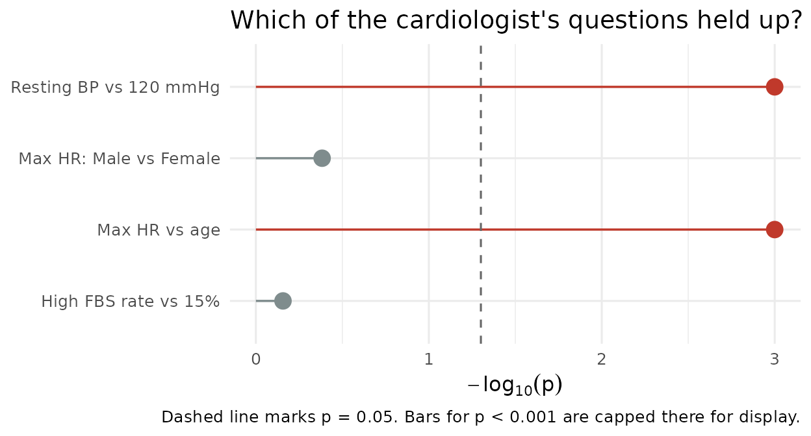

Hypothesis Testing with {statim}
A practical guide using real clinical data
Source:vignettes/usage/htest.Rmd
htest.RmdWhy this vignette exists
Every R course teaches t.test() in week one and never
revisits it. Six months later you’re staring at
alternative = "greater" trying to remember whether that
means your hypothesis or its opposite. statim exists to
try fix that one problem: to write the null hypothesis itself as an
algebraic expression (e.g. MU(x) == 120,
RHO(x, y) == 0), instead of translating it into an
argument.
Does that trade-off actually pay off? To find out, this vignette runs four real questions from a real dataset through statim, base R, and rstatix, and doesn’t flinch from saying when the extra syntax isn’t worth it.
Sample Problem
The dataset: 303 patients from the Cleveland Clinic (via Daniel Bourke’s “zero-to-mastery-ml” repo). The questions, framed as a cardiologist would ask them:
- Is average resting blood pressure different from the clinical normal of 120 mmHg?
- Do men and women differ in maximum heart rate achieved during stress testing?
- Is there a linear relationship between age and maximum heart rate?
- Is the proportion of male patients with fasting blood sugar above 120 mg/dL different from an assumed population baseline of 15%?
One-sample t-test, two-sample t-test, correlation test, one-sample proportion test — the four tests almost every intro stats course covers, run on data that actually matters.
Setup
statim’s author reaches for box day to day. It’s an R package that bring an another but better import system that forces every dependency to be declared explicitly, so a script’s imports double as its own dependency graph.
box::use(
stats[t.test, cor.test, binom.test],
statim[
TTEST, CORTEST, P_TEST,
# Current grammars
define_model, prepare, via, state_null, conclude,
# Mappers
x_by, rel, prop, on,
MU, RHO, PI
],
rstatix[t_test, cor_test, binom_test],
ggplot2[ggplot, aes, geom_segment, geom_point, geom_vline, scale_color_manual, labs, theme_minimal]
)
box::use(
dplyr[keep_when = filter, mutate],
readr[read_csv]
)
heart = read_csv("https://raw.githubusercontent.com/mrdbourke/zero-to-mastery-ml/master/data/heart-disease.csv") |>
mutate(
sex = factor(sex, levels = c(0, 1), labels = c("Female", "Male")),
fbs = factor(fbs, levels = c(0, 1), labels = c("Normal", "High"))
)
[1mRows:
[22m
[34m303
[39m
[1mColumns:
[22m
[34m14
[39m
[36m──
[39m
[1mColumn specification
[22m
[36m────────────────────────────────────────────────────────
[39m
[1mDelimiter:
[22m ","
[32mdbl
[39m (14): age, sex, cp, trestbps, chol, fbs, restecg, thalach, exang, oldpea...
[36mℹ
[39m Use `spec()` to retrieve the full column specification for this data.
[36mℹ
[39m Specify the column types or set `show_col_types = FALSE` to quiet this message.| Column | Type | Description |
|---|---|---|
trestbps |
Continuous | Resting blood pressure (mm Hg) |
thalach |
Continuous | Maximum heart rate achieved |
age |
Continuous | Age in years |
sex |
Binary | Sex (0 = Female, 1 = Male) |
fbs |
Binary | Fasting blood sugar > 120 mg/dL (0 = No, 1 = Yes) |
Question 1: Is resting blood pressure elevated?
H_0: \mu=120 \qquad H_1: \mu\neq120
This is the simplest case, so it’s worth showing every entry point once.
Codes
There are two layouts to perform one-sample t-test:
Using on()
heart |>
define_model(on(trestbps)) |>
prepare(TTEST, .mu = 120) |>
conclude()
== Model =======================================================================
Variable Mapper : on
Args : trestbps
== T-Test ======================================================================
-- Summary ---------------------------------------------------------------------
───────────────────────────────────────────────
term estimate true_mu t_stat p_val
───────────────────────────────────────────────
trestbps 131.624 120 11.537 <0.001
───────────────────────────────────────────────
-- Confidence Interval ---------------------------------------------------------
────────────────────────────────
term lower_95 upper_95
────────────────────────────────
trestbps 129.641 133.607
────────────────────────────────
-- Summary ---------------------------------------------------------------------
───────────────────────────────────────────────
term estimate true_mu t_stat p_val
───────────────────────────────────────────────
trestbps 131.624 120 11.537 <0.001
───────────────────────────────────────────────
-- Confidence Interval ---------------------------------------------------------
────────────────────────────────
term lower_95 upper_95
────────────────────────────────
trestbps 129.641 133.607
────────────────────────────────
Using formula syntax
heart |>
define_model(trestbps ~ 1) |>
prepare(TTEST, .mu = 120) |>
conclude()
== Model =======================================================================
Variable Mapper : formula
Args : trestbps ~ 1
left_var : 1
right_var : 0
== T-Test ======================================================================
-- Summary ---------------------------------------------------------------------
─────────────────────────────────────────────────────────
groups type est_type est t-stat pval
─────────────────────────────────────────────────────────
1 one sample mu 131.624 11.537 <0.001
─────────────────────────────────────────────────────────
-- Confidence Interval ---------------------------------------------------------
──────────────────────────────────────────
groups type lower_95 upper_95
──────────────────────────────────────────
1 one sample 129.641 133.606
──────────────────────────────────────────
TTEST(trestbps ~ 1, heart, .mu = 120)-- Summary ---------------------------------------------------------------------
─────────────────────────────────────────────────────────
groups type est_type est t-stat pval
─────────────────────────────────────────────────────────
1 one sample mu 131.624 11.537 <0.001
─────────────────────────────────────────────────────────
-- Confidence Interval ---------------------------------------------------------
──────────────────────────────────────────
groups type lower_95 upper_95
──────────────────────────────────────────
1 one sample 129.641 133.606
──────────────────────────────────────────
t_test(heart, trestbps ~ 1, mu = 120)# A tibble: 1 × 7
.y. group1 group2 n statistic df p
* <chr> <chr> <chr> <int> <dbl> <dbl> <dbl>
1 trestbps 1 null model 303 11.5 302 9.34e-26
t.test(heart$trestbps, mu = 120)
One Sample t-test
data: heart$trestbps
t = 11.537, df = 302, p-value < 2.2e-16
alternative hypothesis: true mean is not equal to 120
95 percent confidence interval:
129.6411 133.6065
sample estimates:
mean of x
131.6238
t.test(trestbps ~ 1, heart, mu = 120)
One Sample t-test
data: trestbps
t = 11.537, df = 302, p-value < 2.2e-16
alternative hypothesis: true mean is not equal to 120
95 percent confidence interval:
129.6411 133.6065
sample estimates:
mean of x
131.6238 Verdict
All of the packages addresses the problem by performing one-sample
t-test in a single line of code. However, what statim
buys instead is legibility of intent: define_model(),
prepare(), conclude() read like a sentence,
and you can do more with statim’s main API, whereas
t.test(x, mu = 120) reads like an API you have to already
know.
Interpretation: 131.6 mmHg average, significantly above 120 (p < 0.001). This cohort runs elevated.
Question 2: Does max heart rate differ by sex?
H_0: \mu_{\text{thalach}\mid\text{sex=Female}}=\mu_{\text{thalach}\mid\text{sex=Male}} \qquad H_1: \mu_{\text{thalach}\mid\text{sex=Female}} \neq \mu_{\text{thalach}\mid\text{sex=Male}}
Codes
There are three layouts to perform two-sample t-test:
Using on()
This version requires via("two_sample") after
prepare(TTEST) to perform two-sample t-test. Since it
requires via("two_sample"), you can’t use its eager
form/one liner code.
female = heart$thalach[heart$sex == "Female"]
male = heart$thalach[heart$sex == "Male"]
# Requires via("two_sample")
# To perform two-sample t-test from on()
define_model(on(female, male)) |>
prepare(TTEST) |>
via("two_sample") |>
state_null(
MU(female) == MU(male)
) |>
conclude()
== Model =======================================================================
Variable Mapper : on
Args : female, male
== T-Test · two_sample =========================================================
-- Summary ---------------------------------------------------------------------
────────────────────────────────────────────────────────
group estimate t_stat df p_val
────────────────────────────────────────────────────────
1*female + -1*male 2.164 0.818 219.790 0.414
────────────────────────────────────────────────────────
-- Confidence Interval ---------------------------------------------------------
──────────────────────────────────────────
group lower_95 upper_95
──────────────────────────────────────────
1*female + -1*male -3.050 7.378
──────────────────────────────────────────
Using x_by()
heart |>
define_model(x_by(thalach, sex)) |>
prepare(TTEST) |>
state_null(
MU(thalach, sex == "Female") == MU(thalach, sex == "Male")
) |>
conclude()
== Model =======================================================================
Variable Mapper : x_by
Args : thalach | sex
x_vars : 1
by_vars : 1
== T-Test ======================================================================
-- Summary ---------------------------------------------------------------------
───────────────────────────────────────────
group estimate t_stat df p_val
───────────────────────────────────────────
sex 2.164 0.818 219.790 0.414
───────────────────────────────────────────
-- Confidence Interval ---------------------------------------------------------
─────────────────────────────
group lower_95 upper_95
─────────────────────────────
sex -3.050 7.378
─────────────────────────────
-- Summary ---------------------------------------------------------------------
───────────────────────────────────────────
group estimate t_stat df p_val
───────────────────────────────────────────
sex -2.164 -0.818 219.790 0.414
───────────────────────────────────────────
-- Confidence Interval ---------------------------------------------------------
─────────────────────────────
group lower_95 upper_95
─────────────────────────────
sex -7.378 3.050
─────────────────────────────
Using formula syntax
Currently, the <formula> layout doesn’t have
translation for state_null().
heart |>
define_model(thalach ~ sex) |>
prepare(TTEST) |>
conclude()
== Model =======================================================================
Variable Mapper : formula
Args : thalach ~ sex
left_var : 1
right_var : 1
== T-Test ======================================================================
-- Summary ---------------------------------------------------------------------
──────────────────────────────────────────────────────
groups type est_type est t-stat pval
──────────────────────────────────────────────────────
sex two sample mu_diff 2.164 0.818 0.414
──────────────────────────────────────────────────────
-- Confidence Interval ---------------------------------------------------------
──────────────────────────────────────────
groups type lower_95 upper_95
──────────────────────────────────────────
sex two sample -3.051 7.378
──────────────────────────────────────────
TTEST(thalach ~ sex, heart)-- Summary ---------------------------------------------------------------------
──────────────────────────────────────────────────────
groups type est_type est t-stat pval
──────────────────────────────────────────────────────
sex two sample mu_diff 2.164 0.818 0.414
──────────────────────────────────────────────────────
-- Confidence Interval ---------------------------------------------------------
──────────────────────────────────────────
groups type lower_95 upper_95
──────────────────────────────────────────
sex two sample -3.051 7.378
──────────────────────────────────────────
t_test(heart, thalach ~ sex)# A tibble: 1 × 8
.y. group1 group2 n1 n2 statistic df p
* <chr> <chr> <chr> <int> <int> <dbl> <dbl> <dbl>
1 thalach Female Male 96 207 0.818 220. 0.414
Two forms, but the <formula> interface is usually
more preferred than the regular vector one. For the regular vector, we
can use the same vector from the statim section.
Regular Vector
t.test(female, male)
Welch Two Sample t-test
data: female and male
t = 0.8178, df = 219.79, p-value = 0.4144
alternative hypothesis: true difference in means is not equal to 0
95 percent confidence interval:
-3.050537 7.377831
sample estimates:
mean of x mean of y
151.1250 148.9614 Formula Syntax
t.test(thalach ~ sex, data = heart)
Welch Two Sample t-test
data: thalach by sex
t = 0.8178, df = 219.79, p-value = 0.4144
alternative hypothesis: true difference in means between group Female and group Male is not equal to 0
95 percent confidence interval:
-3.050537 7.377831
sample estimates:
mean in group Female mean in group Male
151.1250 148.9614 Verdict
This is where the two designs actually diverge, not just in syntax.
Empirically, statim, rstatix, and base R
treat “compare two groups” as something the <formula>
already encodes, thalach ~ sex says everything. However,
statim goes beyond that with on() and
x_by(). x_by() says the same thing, but then
lets you go further: this layout has state_null()
translation, and you can write out
MU(thalach, sex == "Female") == MU(thalach, sex == "Male)
as an actual algebraic expression, group filters and all.
on(), on the other hand, has the same logic as
x_by() one except it treats the variables to be independent
to each other, and its null hypothesis expression doesn’t use the
<sex == "Male> given argument.
That’s more typing for a question this simple. It stops being “more typing” and starts being “the only way to say what you mean” the moment the hypothesis isn’t a straight group comparison anymore.
Interpretation: no difference (p = 0.414). Sex isn’t doing any explanatory work here.
Question 3: Does max heart rate fall with age?
H_0: \rho_{\text{thalach, age}}=0 \qquad H_1: \rho_{\text{thalach, age}} \neq 0
heart |>
define_model(rel(thalach, age)) |>
prepare(CORTEST) |>
state_null(
RHO(thalach, age) == 0
) |>
conclude()
== Model =======================================================================
Variable Mapper : rel
Args : thalach ; age
x_vars : 1
resp_vars : 1
== Correlation Test ============================================================
-- Summary ---------------------------------------------------------------------
───────────────────────────────────────────────────
pair estimate statistic df p_val
───────────────────────────────────────────────────
age ~ thalach -0.398 -7.539 301 <0.001
───────────────────────────────────────────────────
-- Confidence Interval ---------------------------------------------------------
─────────────────────────────────────
pair lower_95 upper_95
─────────────────────────────────────
age ~ thalach -0.489 -0.299
─────────────────────────────────────
-- Summary ---------------------------------------------------------------------
───────────────────────────────────────────────────
pair estimate statistic df p_val
───────────────────────────────────────────────────
age ~ thalach -0.398 -7.539 301 <0.001
───────────────────────────────────────────────────
-- Confidence Interval ---------------------------------------------------------
─────────────────────────────────────
pair lower_95 upper_95
─────────────────────────────────────
age ~ thalach -0.489 -0.299
─────────────────────────────────────
rstatix::cor_test(heart, age, thalach)# A tibble: 1 × 9
var1 var2 cor statistic df p conf.low conf.high method
<chr> <chr> <dbl> <dbl> <int> <dbl> <dbl> <dbl> <chr>
1 age thalach -0.4 -7.54 301 5.63e-13 -0.489 -0.299 Pearson
cor.test(~ thalach + age, heart)
Pearson's product-moment correlation
data: thalach and age
t = -7.5386, df = 301, p-value = 5.628e-13
alternative hypothesis: true correlation is not equal to 0
95 percent confidence interval:
-0.4892312 -0.2992831
sample estimates:
cor
-0.3985219 Small trap worth flagging: base R’s <formula> here
is ~ thalach + age, not thalach ~ age. There’s
no dependent variable in a correlation, so the usual left/right
convention doesn’t mean anything, but it’s easy to assume it does and
misread the formula. {rel(thalach, age)} sidesteps the
ambiguity by just naming both variables. rstatix
sidesteps it differently, by borrowing
dplyr::select()-style column picking, always pairwise.
Interpretation: a real, moderate negative correlation (r = -0.398, p < 0.001). Heart rate ceiling drops with age, as expected.
Question 4: Is high fasting blood sugar unusually common in men?
H_0: \pi=0.15 \qquad H_1: \pi\neq0.15
define_model(prop(n_high_fbs, n_males)) |>
prepare(P_TEST) |>
state_null(
PI() == 0.15
) |>
conclude()
== Model =======================================================================
Variable Mapper : prop
Args : 33 / 207
x : 33
n : 207
== Proportion Test =============================================================
-- Summary ---------------------------------------------------------------------
───────────────────────────────────────────────
x n true_p estimate statistic p_val
───────────────────────────────────────────────
33 207 0.150 0.159 33 0.697
───────────────────────────────────────────────
-- Confidence Interval ---------------------------------------------------------
──────────────────────
lower_95 upper_95
──────────────────────
0.112 0.216
──────────────────────
-- Summary ---------------------------------------------------------------------
───────────────────────────────────────────────
x n true_p estimate statistic p_val
───────────────────────────────────────────────
33 207 0.150 0.159 33 0.697
───────────────────────────────────────────────
-- Confidence Interval ---------------------------------------------------------
──────────────────────
lower_95 upper_95
──────────────────────
0.112 0.216
──────────────────────
binom_test(n_high_fbs, n_males, p = 0.15)# A tibble: 1 × 6
n estimate conf.low conf.high p p.signif
* <int> <dbl> <dbl> <dbl> <dbl> <chr>
1 207 0.159 0.112 0.217 0.697 ns
binom.test(n_high_fbs, n_males, p = 0.15)
Exact binomial test
data: n_high_fbs and n_males
number of successes = 33, number of trials = 207, p-value = 0.6969
alternative hypothesis: true probability of success is not equal to 0.15
95 percent confidence interval:
0.1123500 0.2165365
sample estimates:
probability of success
0.1594203 No <formula> anywhere in this section — a
proportion test is just two numbers, x and n,
and all three packages treat it that way. The only real question is
where those two numbers live: as positional arguments
(x, n, p =) in base R and rstatix, or
wrapped in prop() so the pipeline keeps the same shape it
had in Questions 1-3. Neither is more correct; statim’s
version is only worth it if you’re already committed to the pipeline for
other reasons.
Interpretation: 33 of 207 men (15.9%), not distinguishable from the 15% baseline (p = 0.697).
The scorecard
Two of four questions came back significant. Here’s all four side by side, instead of another bullet list:
results = data.frame(
question = c(
"Resting BP vs 120 mmHg",
"Max HR: Male vs Female",
"Max HR vs age",
"High FBS rate vs 15%"
),
p_value = c(0.001, 0.414, 0.001, 0.697),
significant = c(TRUE, FALSE, TRUE, FALSE)
)
results$question = factor(results$question, levels = rev(results$question))
ggplot(results, aes(x = -log10(p_value), y = question, color = significant)) +
geom_segment(aes(x = 0, xend = -log10(p_value), y = question, yend = question), linewidth = 0.6) +
geom_point(size = 4) +
geom_vline(xintercept = -log10(0.05), linetype = "dashed", color = "grey40") +
scale_color_manual(values = c("TRUE" = "#c0392b", "FALSE" = "#7f8c8d"), guide = "none") +
labs(
x = expression(-log[10](p)),
y = NULL,
title = "Which of the cardiologist's questions held up?",
caption = "Dashed line marks p = 0.05. Bars for p < 0.001 are capped there for display."
) +
theme_minimal(base_size = 12)
The honest take
Base R and rstatix win every single-question race in
this vignette on raw brevity — that’s not close, and no amount of
statim syntax changes it. What changes is what happens
after question four, when the cardiologist comes back with question
thirty: the same
define_model() |> prepare() |> state_null() |> conclude()
shape holds for a one-sample test, a two-group comparison, a
correlation, or a proportion, and the hypothesis in each case is legible
on its own, without cross-referencing which argument means what in which
function. That consistency is the entire bet statim is
making. Whether it’s a bet worth making depends on whether you’re
writing four tests or forty.